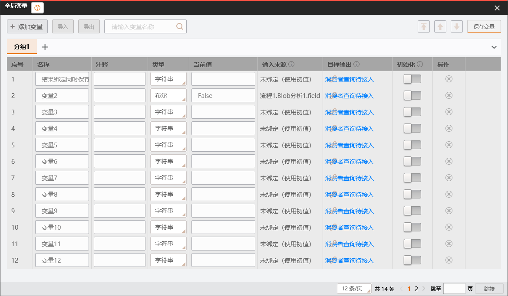

产品源码93b1ff896（C完整cbf26eefe、B视觉63e354bfa，后续146/188/93集中修复实际主窗依赖）。最终正式61工程锁定还原/全量Release 0错误、3418警告；同版载荷D5A32CDD3C28CA68F9292092B3905CA1466BD37EF5E03E90726D155AF48BA054。49项实际验证进程关键依赖字节与正式产物一致；未使用候选Release复制，不把独立成绩代签根集成。
| 本次具备基础的范围 | 根同版实际验证 | 保留边界 |
|---|---|---|
| 中立Binary、六系数持久矩阵、七类持久ROI/四样式、8/16位三种通道像素资产 | 变量25/25、Persistence45/45、SDK280/280，0跳过；真实Session非空V5/档案2、另存再存/重开/失败保旧/取消/资产释放。伪造IReadOnlyStoredRaster在ValueGate下拒绝，Layout/reader零回调、无目标文件。 | 持久像素不伪装运行Image/全域/frame；StoredRoi/StoredAffine与运行ROI/带from/to矩阵区分。复杂测试值通过档案编码注入，并非界面创建；旧V4/档案1拒绝，无兼容双轨。 |
| 原件变量管理与实际结果绑定 | 完整UI232/232、公共变量WPF6/6；隐藏真实Main命令开窗/14变量分页/组与原始文本、绑定同次Flush单history/回执、实际HALCON发布值、结果控件解绑/资格过滤/重绑、V5保存重开再运行及目录/Session/Dispatcher/OLE关闭均exit0。最终双主题真实图已核。 | 目标批量消费者绑定、初始化配置/执行策略、流程局部变量、档案UI/远程、新复杂运行绑定、管理器运行值报告仍未实现；入口明确保护，空组仅窗口内。固定浅色客户区沿原件，不重画。 |
| 正式组件加载与实际宿主 | Authority/目录25/25；去掉RunChain显式Kernel/HAL引导后，实际生产13组无WPF/UI/旧SDK；本地/模拟相机、ImageLoad→Blob、私有调试、reader/取消通过；隐藏两工具参数窗口退出0。完整App.OnStartup→Main加载→排空关闭退出0。 | 仅依批准清单完整PE身份+SHA，RID候选由已签封所有者deps与CLR解析器选胜出；无全局Resolver/猜路径/旧图像locator。真实相机、VM动态差分、VS设计器、人工与主仓未验。 |
失败保留：早期共享测试副本字节不同经正常项目引用构建对齐；首轮缺S2_CASE_ROOT/正式载荷环境的测试失败不隐去。真正集成缺陷为旧Hal装配退出后主窗缺halcondotnetxl，及CLR已加载副本/同身份RID资产处理；已沿同一批准依赖链集中修复，不靠恢复旧SDK或测试专属算法引导通过。最终日志统一complex-variable-approved-*20261104，TRX与49项SHA回执在本树Release/_validation。
本批完整设计、运行证据及实际预览 · 批准依赖修复 · 原完整剩余矩阵。本批自测闭口，不等人工验收；全平台目标仍进行中：六测量非视觉候选/数值枚举控件、公共绘制卡尺、日志中立化、其他工具/SDK剩余/最终物理目标树继续。Group与新循环暂停，不能把当前两工具和变量批次签成全平台完成。
图片来自最终D5载荷真实主窗探针，不是HTML原型或另造设计器界面。原件客户区固定浅色；标题帮助按钮随主题资源变化。

| 证据 | 本工作区路径 |
|---|---|
| 正式锁定全量与统一签封 | Release/_validation/complex-variable-approved-final-full-build-20261104.log；complex-variable-approved-final-seal-20261104.log |
| 49项关键依赖SHA | complex-variable-approved-final-assembly-hashes-20261104.json，49项Same=true |
| 六类完整回归 | complex-variable-approved-final-{VariableValue.Runtime.Tests,SunEyeVision.Persistence.Tests,SunEyeVision.Plugin.SDK.Tests,SunEyeVision.UI.Tests,SunEyeVision.Variables.Wpf.Tests,SunEyeVision.Plugin.Infrastructure.Tests}-20261104.log；complex-variable-approved-final-trx-20261104目录 |
| 真实生产/窗口 | complex-variable-approved-runtime-{session,tcp,runchain,variable-main,hidden-parameters}-20261104.log，均NativeExit=0；complex-variable-approved-full-startup-20261104.log实际App Run=0 |
| 原件与候选证据 | 原件覆盖；B候选分版记录；C原完整设计与补充 |
这些结果只证明本批所列交付。物理键鼠、实际VS设计器、原厂动态差分及主仓集成未执行；用户可后续集中验收，不作为本次自测完成的前置条件。目标反向批量绑定等原未实现清单保留，不以禁用断言当已实现。